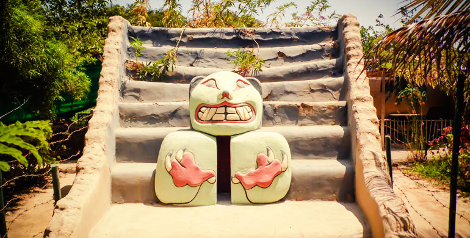

1. El Complejo Arqueológico de Púncuri
Púncuri es un templo de barro perteneciente al periodo Formativo temprano. Es célebre a nivel nacional por albergar una impresionante escultura tridimensional de un felino (puma) moldeada en arcilla, además de relieves polícromos que demuestran el alto desarrollo religioso y artístico de los antiguos pobladores del valle de Nepeña.
